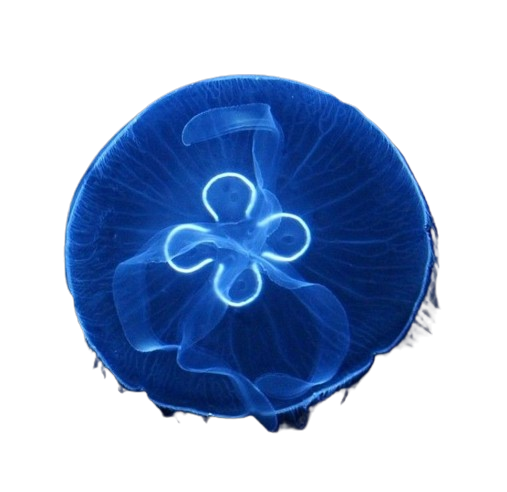
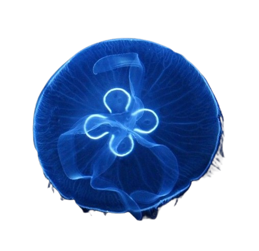

PORTFOLIO
.png) 

.png)
.png)
ABOUT ME
Hi, I'm Budur, an enthusiastic UX/UI Designer and Frontend Developer with a fervent love for design and a knack for turning ideas into captivating digital experiences. With a creative mind and a meticulous attention to detail, I specialize in crafting visually stunning interfaces that not only look great but also function seamlessly. My proficiency in HTML, CSS, and JavaScript allows me to bring designs to life, ensuring optimal user engagement and satisfaction. Driven by a passion for innovation, I constantly explore new techniques and stay updated with the latest trends in design and development. I am proficient in utilizing tools like Figma, Adobe XD, and Sketch to prototype and design intuitive user interfaces that prioritize user experience. What sets me apart is my dedication to understanding the needs and preferences of users, which allows me to create designs that resonate with and delight them. I believe that effective communication and collaboration are essential in delivering successful projects, and I always strive to work closely with clients and team members to achieve the best results. With a strong foundation in design principles and frontend development, I am committed to pushing the boundaries of creativity and delivering exceptional solutions that leave a lasting impression. Explore my portfolio to see how I blend passion, expertise, and love for design to create memorable digital experiences.